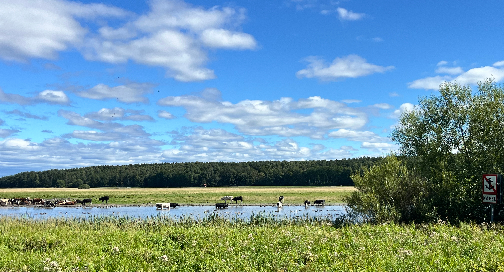

Teaching
Teaching Philosophy
My approach to teaching economics centers on fostering critical thinking skills and developing students' ability to apply economic theory to real-world scenarios. I believe that economics education should empower students to analyze complex issues through the lens of economic principles. As well as develop their technical skills to apply the principles they learn.
In the classroom, I balance lectures with activities. I believe students need both the opportunity to apply knowledge as well exposure to the material. I design courses to include collaborative problem-solving projects, and occasional discussions of important economic events. When possible I encourage students to pursue their unique interests while developing empirical skills.
Mentoring Experience
Beyond traditional classroom teaching, I have extensive experience mentoring undergraduate and graduate students in research settings. At Iowa State University, I guided students through research projects, helping them develop skills in data analysis, economic modeling, and empirical methods.
As a research mentor, I emphasize hands-on learning, encouraging students to tackle challenging problems while providing the support and guidance they need to succeed. Many of my undergraduate mentees have gone on to present their work at conferences and pursue graduate studies in economics.
Worked one on one or in small groups with undergraduates on research projects. Students cultivate econometric and coding skills, as well as deepens their knowledge of research design. Students were encouraged to present their work and publish if possible. Often students worked on a wide variety of topics.
Collaborated with PhD and Masters students on research projects, providing guidance on methodology, literature review, and technical implementation. Served as a resource for students developing their own research agendas on a wide variety of topics.

Levi Soborowicz
Senior Economist
MITRE
7515 Colshire Drive
McLean, VA 22102
Student Feedback
"I really enjoyed how mathy it was. It seemed like a significant portion of the class was engineers taking the class because they needed it for a gen ed, and I thougth the mathiness of the course was really good and way more interesting then just reading various papers."
— Economics of Discrimination Student, Spring 2024
"Practical application of principles I've learned in other classes. Presenting on economic papers was very interesting and fun"
— Economics of Discrimination Student, Spring 2024